Ulkasemi Pvt. Limited
Analog IC Design Engineer
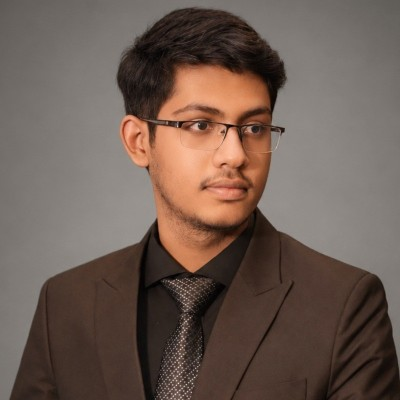
I'm an analog IC design engineer at Ulkasemi, working on the blocks where signal integrity is won or lost: successive-approximation ADCs, dynamic comparators, integer-N PLLs, and op-amps.
My background is a B.Sc. in Electrical and Electronic Engineering from BUET. Alongside circuit work I've worked on topological photonics-based waveguides and sensors, which is where my interest in wave physics meets device design.
I'm currently applying to PhD programs, looking for groups where those two threads can run together.
Analog IC Design Engineer
B.Sc. in Electrical & Electronic Engineering.
Higher Secondary Certificate.
Two threads. One runs through silicon, one through light — but both are about controlling a wave in a structure small enough that the structure and the wave stop being separable.
InterestsUndergraduate thesis — BUET
Supervisor: Dr. Mohammed Imamul Hassan Bhuiyan, Professor, EEE, BUET
Topologically protected edge-state guiding in a valley-Hall photonic crystal, applied to label-free detection of early-stage carcinoma.
Ulkasemi Pvt. Limited
22 nm FD-SOI · for 5G NR upper mid-band synthesis
Charge-pump PLL built around a multi-band LC-VCO with binary-search automatic frequency calibration.
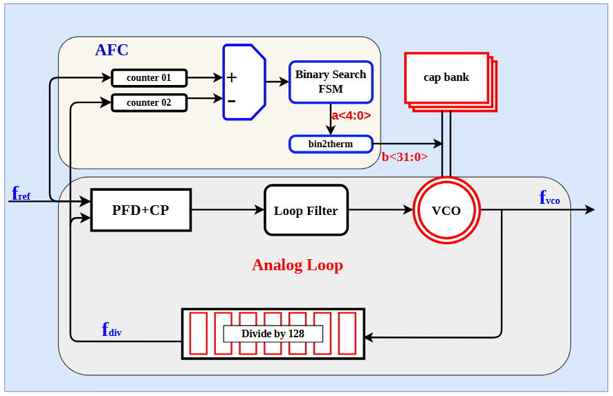
Ulkasemi Pvt. Limited
65 nm CMOS · for SAR ADCs in IEEE 802.11ax receivers
Two-stage dynamic comparator designed for high-speed successive-approximation converters.
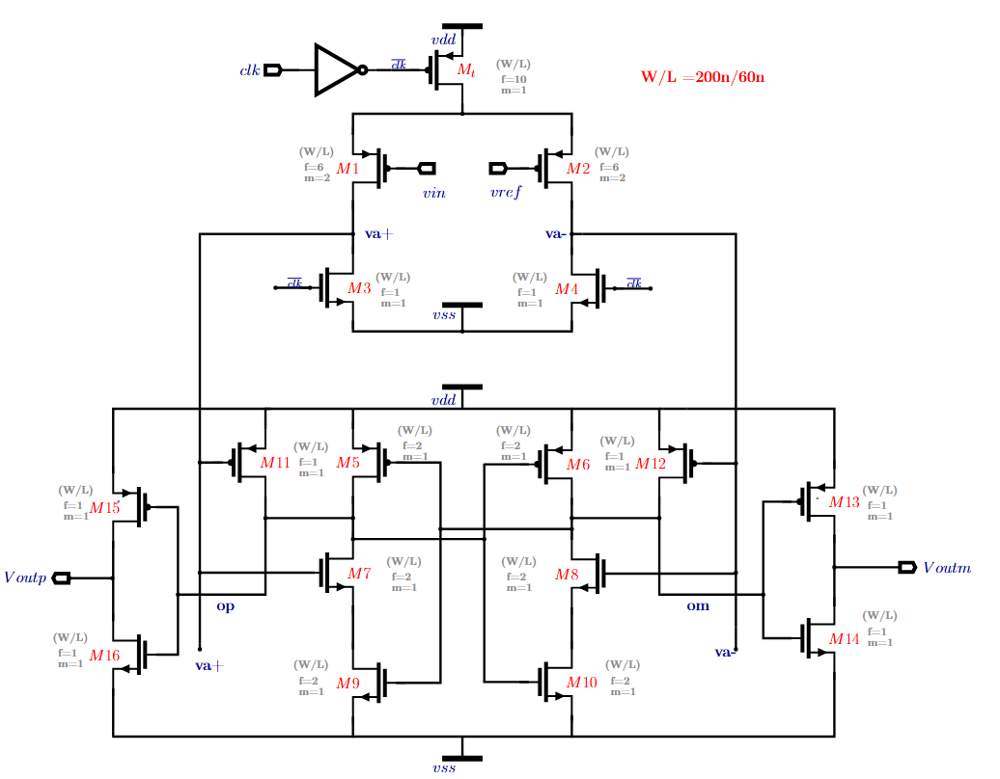
With M. Rahman and M. I. H. Bhuiyan
Fading-channel classification
Ensemble of an SE-dilated CNN and a residual DFENet, adapted by signal-to-noise ratio, for automatic modulation classification under fading channels.
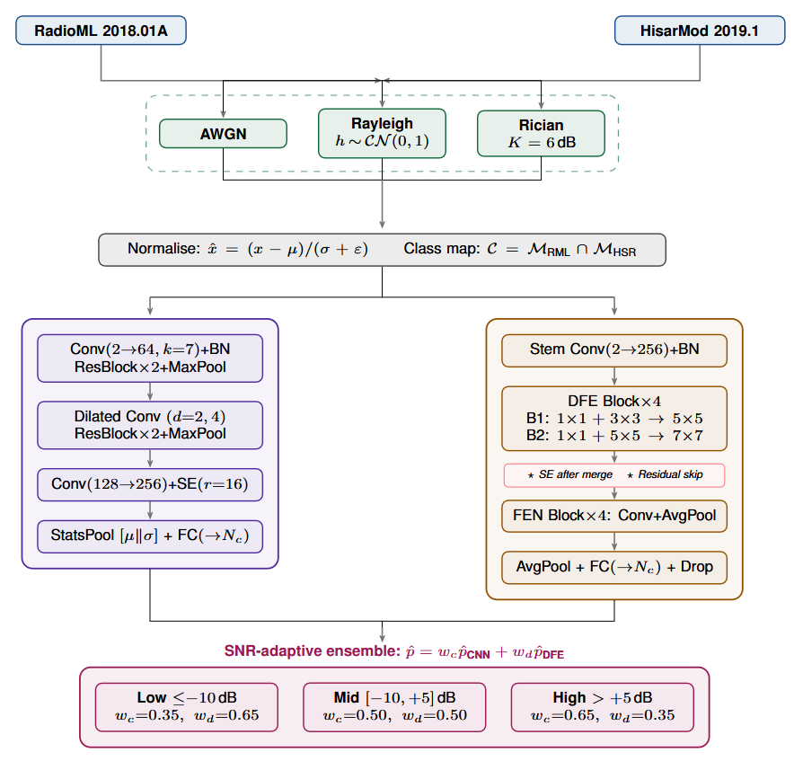
RTL design and testbench in SystemVerilog, with synthesis and place-and-route in Cadence. Timing and functional coverage verified.
View report ↗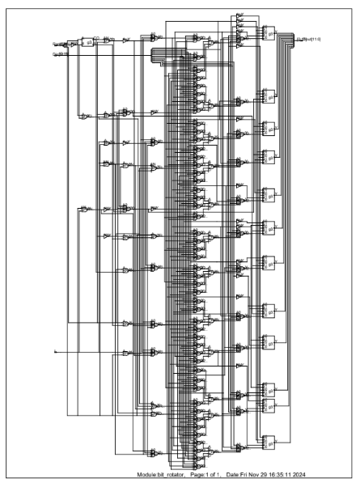
Tracked the maximum power point across both axes using LDR-based feedback, improving energy yield over a fixed-mount baseline.
View report ↗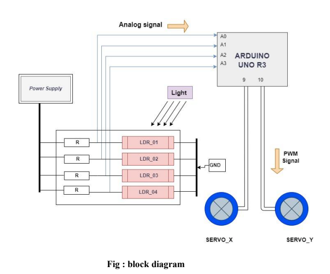
900 mV reference with 20 ppm/°C temperature coefficient, integrating CTAT and PTAT generators, cascode current mirrors, and active noise filtering.
View report ↗Full electrical layout for a 10-storey, 2-unit residential building, covering distribution, wiring, and safety compliance.
View report ↗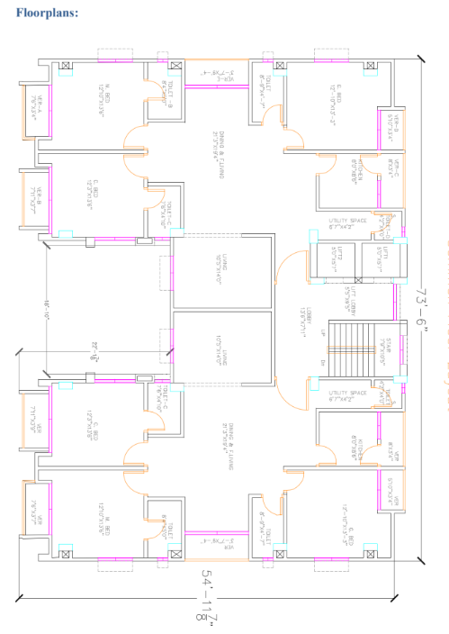
Three-axis CNC supporting drawing, laser engraving, and material cutting, driven by G-code through laserGRBL.
View report ↗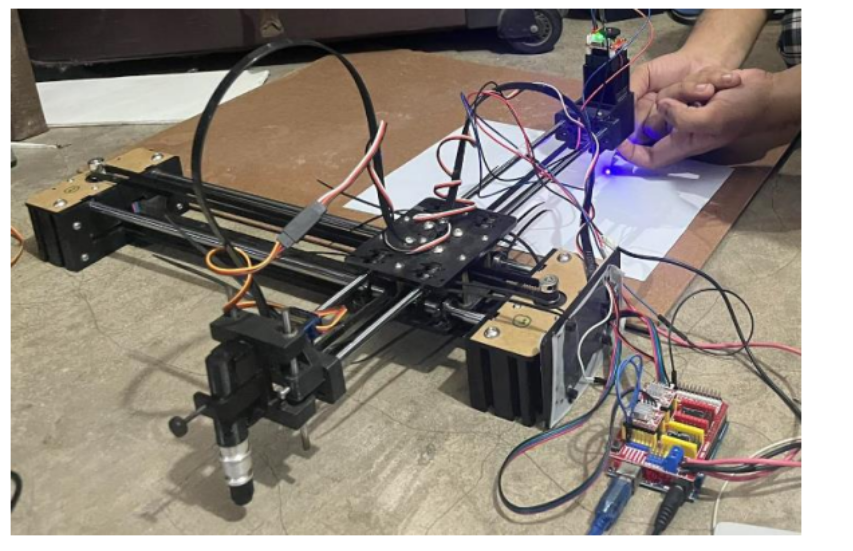
Low-cost Nucleo replacement with GPIO, Timer, EXTI, ADC, and SysTick configured, on a custom PCB laid out in Altium.
View report ↗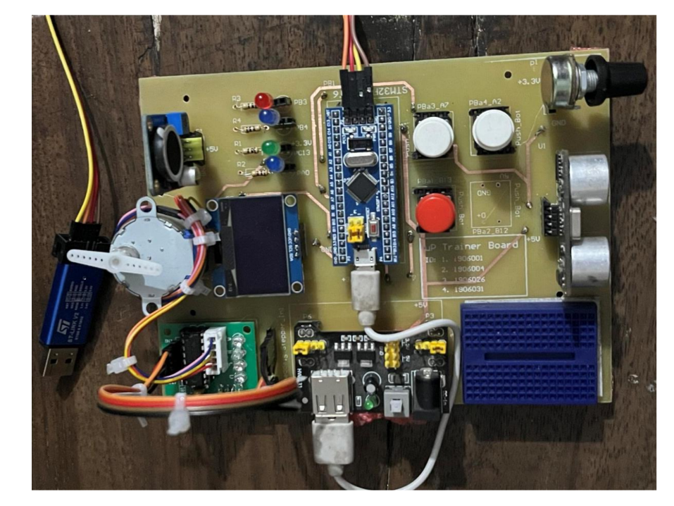
IC-gate-based arithmetic logic unit with register memory, simulated in Proteus and verified on hardware.
View report ↗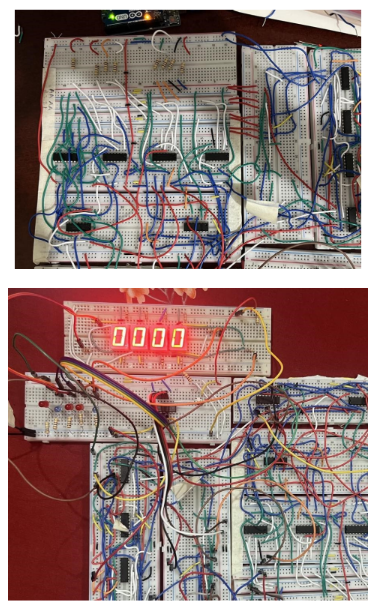
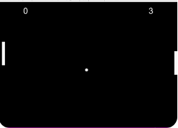
Peer-reviewed work and manuscripts under review.
Dean’s List Award — EEE, BUET
Silver Honor — International Astronomy & Astrophysics Competition (IAAC)
National level — Bangladesh Physics Olympiad (BdPhO)
59th of 10,000+ candidates — BUET Admission Test
1st — JnU and 11th — SUST — Admission Tests
57th of 2,100 students — Notre Dame College, Dhaka
2nd Runner-Up — Bangladesh Junior Science Olympiad (BdJSO)
Board Scholarships — PSC, JSC
Open to research collaborations and PhD opportunities in analog IC design and photonics.
junayethossain260@gmail.com